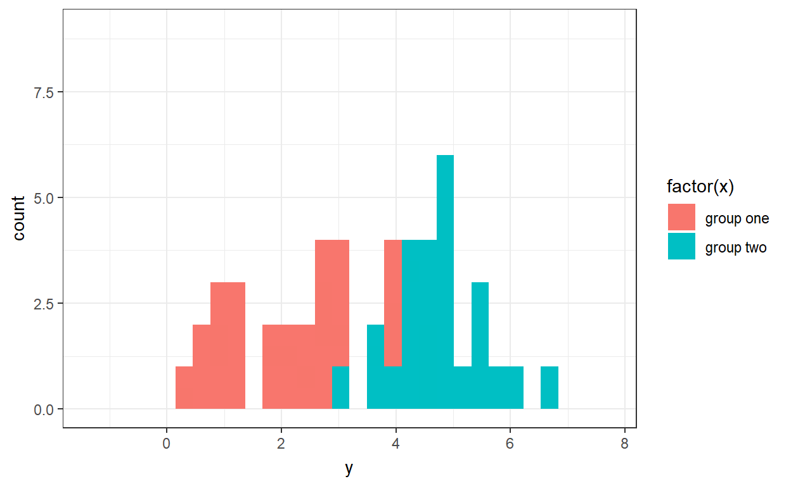
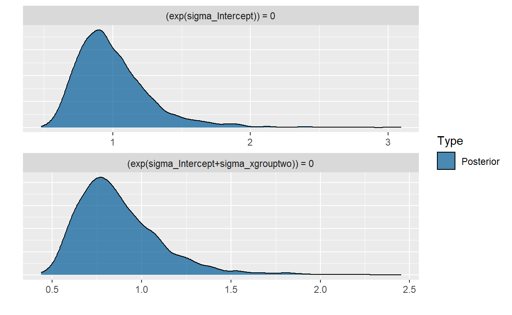

A short description of the post.
At some point you may think, “boy this is overkill”. But that’s not really fair to say if you’ve ever went in search of a power analysis for a multinomial multiple logistic regression and had to report recommendations from the literature to a client instead of some hard numbers. I still haven’t found any software for it (you know the free kind) although there is that one stack exchange post that hints at what you could do.
I found it daunting that something like that wasn’t readily accessible/available in the same vein as one could locate and utilize a linear regression. Eventually I started to grasp why it might be difficult to distill the complexity of a dataset to a few much less one formula for a sample size.
This led me to favor simulations. Okay everything in stats is a simulation but that itself wasn’t evident to me for quite some time. The idea that the key to unlocking an extremely versatile method for power analysis is already available the moment one is introduced to any particular test, had you the code. I feel cheated that something like this isn’t introduced in alongside content of lets say from third year.
So the motivation is that this is a proof of concept, that one could extend to any (I hope) kind of modeling exercise you could undertake for determining sample sizes/power (or the equivalent in the bayesian language). I imagine as the more complex modeling gets such as with hierarchical models, simulations become inevitable so this is also me setting the ground work. This also forces you to become intimate with what you expect from your data, to what analysis you can consider, to dealing with things such as cost analysis, interim analysis (such as for clinical trials which I hope to make a general use case of), expectation of missing data, and so on.
Basically you create datasets for what you think your data is likely to look like, and run the analysis you expect to run. This gives another purpose to going through the grind of a literature review in detail to get an idea for what other persons who investigated what you’re doing would have found; such knowledge helps shape your expectation.
You simulate thousands of datasets (easier than it sounds) and check to see whether a particular sample size will capture an effect you’re interested in or you think exists. There are a few critera that I look at such that this exercise may look a bit different from what you might have come across in your own work.
In this case we may try to detect a standardized difference in means of 0.8 for which we would at a few criteria before selecting a sample size.
Satisfying these two criteria seems like it would take care of other considerations such as whether the value of zero is in the credible/confidence interval, or keeping a direct count of how many times a test reaches significance.
The first problem we will consider is to determine a sample size with a power of 0.8 for a test for a standardized difference in means of 2.5 magnitude. The variance between the two groups will be the same with a one to one group allocation.
\[ \mu_1 \sim N(2,1) \]
\[ \mu_2 \sim N(2.8,1) \]
\[ e \sim N(0,1) \]
\[ \dfrac{\Delta}{\sigma} = \dfrac{\mu_2 - \mu_1}{\sigma} = \dfrac{2.8-2}{1} = 0.8 \]

The above animation should give an easy enough idealization of our expected data. Now that we have the datasets, this is easy as passing each through a regression problem for which I use the brms package in R utilzing the defaults for bayesian estimation.
For each iteration of the regression certain information is extracted namely, the parameter means, 97.5 and 2.75 quantiles of the parameter distributions.
For these problems I make use of the ability to explicity model the variances instead of using a pooled estimate of some kind. Even though I know that the variances are the same this will become set the trend for the upcoming problem.
An example of the model output is as such:
regress <- readRDS("C:/Users/gavin/Documents/GitHub/myBlog/regression_sample_p1.rds")
tab_model(regress)
| y | ||
|---|---|---|
| Predictors | Estimates | CI (95%) |
| Intercept | 2.08 | 1.42 – 2.73 |
| sigma_Intercept | -0.05 | -0.46 – 0.53 |
| xgrouptwo | 0.96 | 0.10 – 1.82 |
| sigma_xgrouptwo | -0.13 | -0.85 – 0.56 |
| Observations | 20 | |
| R2 Bayes | 0.256 | |
where the variances are given on a log scale but is better views as such.
hyp <- c("exp(sigma_Intercept) = 0",
"exp(sigma_Intercept + sigma_xgrouptwo) = 0")
(hyp <- hypothesis(regress, hyp))
Hypothesis Tests for class b:
Hypothesis Estimate Est.Error CI.Lower CI.Upper
1 (exp(sigma_Interc... = 0 1.00 0.27 0.63 1.69
2 (exp(sigma_Interc... = 0 0.87 0.24 0.55 1.47
Evid.Ratio Post.Prob Star
1 NA NA *
2 NA NA *
---
'CI': 90%-CI for one-sided and 95%-CI for two-sided hypotheses.
'*': For one-sided hypotheses, the posterior probability exceeds 95%;
for two-sided hypotheses, the value tested against lies outside the 95%-CI.
Posterior probabilities of point hypotheses assume equal prior probabilities.plot(hyp)

The relevant information is extracted and then the entire process is repeated for another sample size. The first useful piece of information is that for the estimated difference in the means. This effect size is considered large and so it doesn’t require a large sample provided that you are on point with your modeling assumptions, to fit an adquate model describing this situation.
By hovering over a particular point we have access to more information about that particular sample size.
The next informative parameter is that of either of the variances. It is important that this is captured well as this will decide whether your data is too noisy to even begin to interpret what you gathered.
We see the same criteria as mentioned for the location effect size.
Now we will consider a problem that deals with a smaller location effect size as well as with the additional complication of unequal variances.